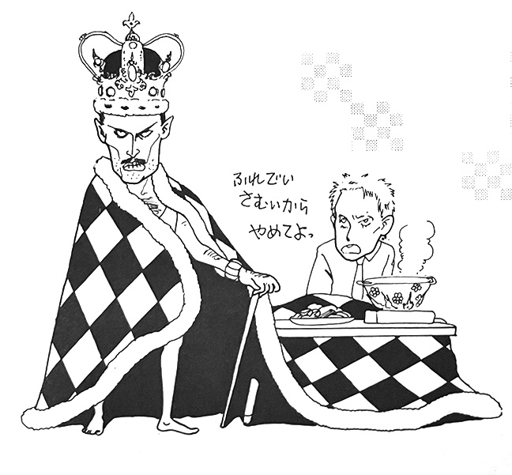
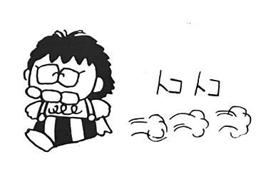

Freddie was the Greatest — the Story of November 24th, 1991
by Manya
On Sunday November 24th, I was on a live radio long-format segment. The station had a direct contract with Reuters, and dedicated translators were on-hand to read the submitted transcripts, translate them to Japanese, and run them over to the studio. That day, the announcement that Freddie had AIDS arrived, and the program's host read it on-air. However, perhaps due to a poor translation or perhaps because someone was insecure in his own sexuality and was trying to maintain appearances, after the host read "Freddie announced that he has AIDS and asks for everyone to join him in his fight," he continued, "Who does this guy think he is?! He got this because he has homosexual tendencies, so why is he saying stuff like that?" I later checked the text, and while it was a very literal translation and difficult to understand, that's what was written.

The evening papers reported lots of things that weren't true. The Mainichi Shimbun, reporting information from their London bureau, stated that he had visited Japan "twice, in 1979 and 1981". Following the AIDS announcement, the Nikkan Sports, quoting London correspondent Masako Suzuki, repeated a lot of terrible off-color rumors from British tabloids like News of the World and the like. It was terribly embarrassing to see a Japanese sports publication simply parroting British tabloids as though they were on par with a Japanese weekly newspaper. The way they wrote made it seem like they didn't expect to be held responsible for what appeared in their paper, and it was really shameful given that the Nikkan was an otherwise reliable source of domestic entertainment news. As a Japanese reporter based in the UK, you should know to take into account the differences between what constitutes a "newspaper" in Japan and the UK.
Wednesday the 27th was my first day back at work since the news broke. The people in charge of music programs kept coming up to me. "We want to do a feature—what do you think of this song selection?" "We want to respond to listener requests—but what do you think about this choice?" And so on and so on. I was prepared for it, and I was grateful, but I could only think of a few things. Still, I tried to contribute, but I was stumped on a few topics. The announcer didn't even bother to take notes, and made me feel a bit uneasy.
Thursday the 28th was the recording day for a program that had been exclusively showcasing Japanese rock for the past 13 years. I met with DJ Kanabunya, who is unrivaled in Kyushu when it comes to music, both Japanese and foreign. His programs were always a treat for music fans. A few years prior he had been frustrated by EMI's lack of support for The Miracle when it came out, and made a flyer slamming EMI to hang in his office. He said "This album is so good it transcends whether you like the band or not. Something this great has to sell." An excerpt from the flyer read, "Don't translate Miracle as "miracle", translate it as "divine skill"... Miracles involve coincidence, but this is reality, not coincidence. It's a feat that only they could pull off... if you try to tell me this won't sell, you're lying."
But let's return to the 28th. Upon seeing my expression, Kanabunya began, "We're going to play the last song for the night, and I want you to pick." I said, "If it's just because I'm the fan in the room, I'll pass." He said, "No, this is a big deal for all rock fans, regardless of whether they're Westerners or Japanese, so we can't just ignore it." Then he said, "We did a feature on FM radio, but we just played a bunch of highlights, all the singles, and finished with Bad Guy". As I listened, regrets from the previous day flooded into my mind. The feature made by those people who'd spoken to me first thing that morning was so sloppy, full of mistakes, and lacked a shred of sense. Why didn't they cooperate more fully? It was so perfunctory, even though I was there... but today's DJ was Kanabunya. Now I had a chance to choose a song. It had to be a popular song, one of their signature songs, and it had to show off Freddie's charm. And the significance of me choosing it... I wrote down a song on the cue sheet, a song that featured his vocals, his piano, his melody, his lyrics, taking into consideration the role of this song in live performances, as well as the meaning of this song in that era... anyone who had known the band since the 70s would understand.

by Hideko
"Today, I talked about The Lost, who come from New York. I followed them around all day and interviewed them, and when I said, 'He's passed away', they said 'Yes, we know. We play completely different music, but we know him and we've listened to his records. He was a great musician and a wonderful vocalist. We're not going to make a public statement, but we'll dedicate the Fukuoka concert to him—that's how we'll perform.' If you watch the entertainment news in Japan right now, there's a lot of fuss about Ken Uehara, but for those of us who have listened to rock music, Freddie was one of the greatest—we were shocked just to hear he had gotten ill, but then the news that he had passed came so quickly after. I don't know what to say, it's hard to express these things, but a vocalist with such a wide vocal range, and such a keen sensibility for incorporating classical, opera, and jazz into rock music... I don't think we'll ever see another one like him, but the one thing I can say is that—and I think I'm speaking for everyone here—at a time when I loved music the most, or rather, when I was at my most impressionable age, listening to a lot of music, thinking about a lot of things, growing up... and then coming to know of this band, being aware of such a great vocalist... it was such a wonderful thing, and I think we can be proud of that. Even though he is no longer with us, we can still hear his voice on so many recordings. We may not be able to see his live shows anymore, but there are many stories left to tell. I hope he rests in peace. And now, I would like to say goodbye with this song. Queen."
We Are The Champions